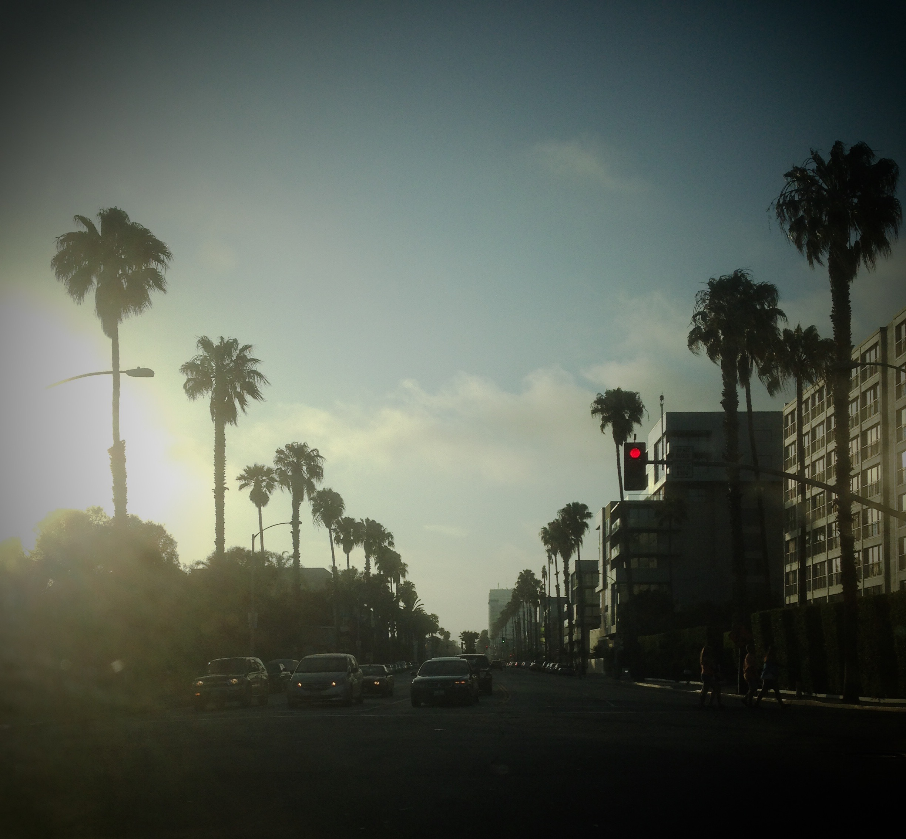
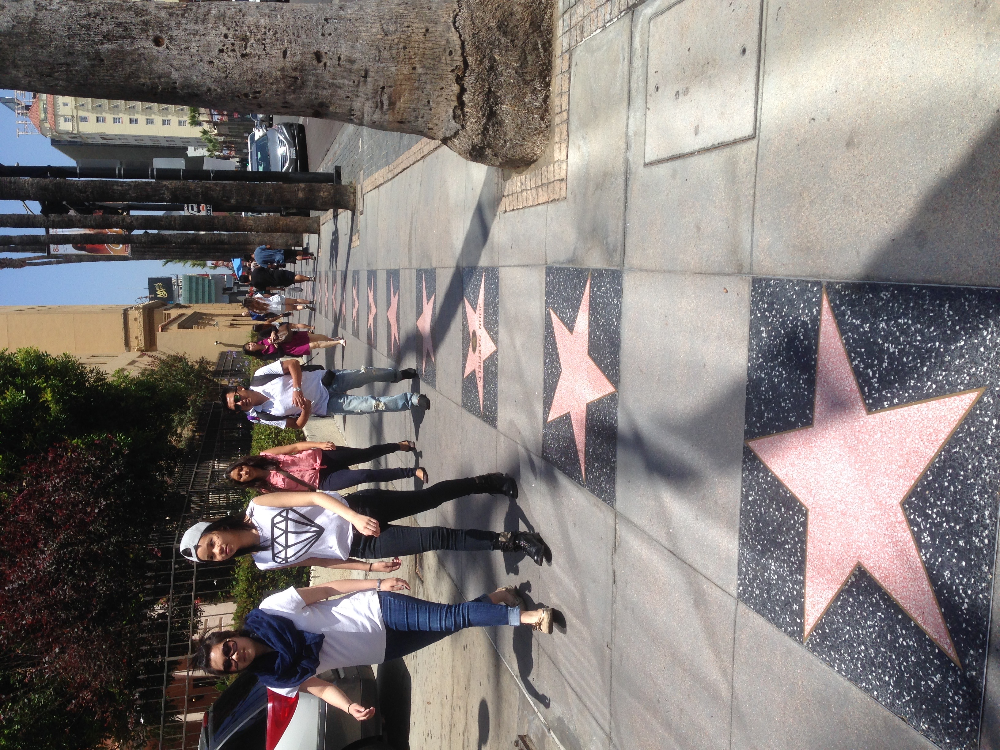
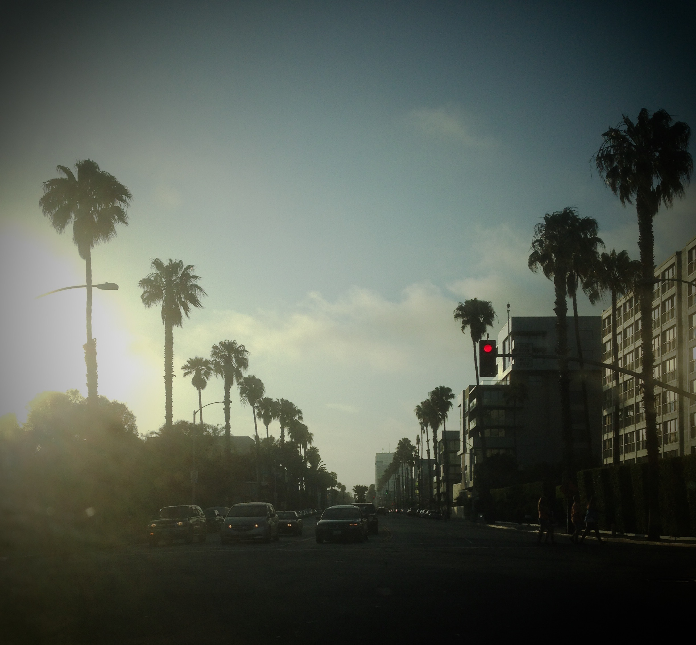
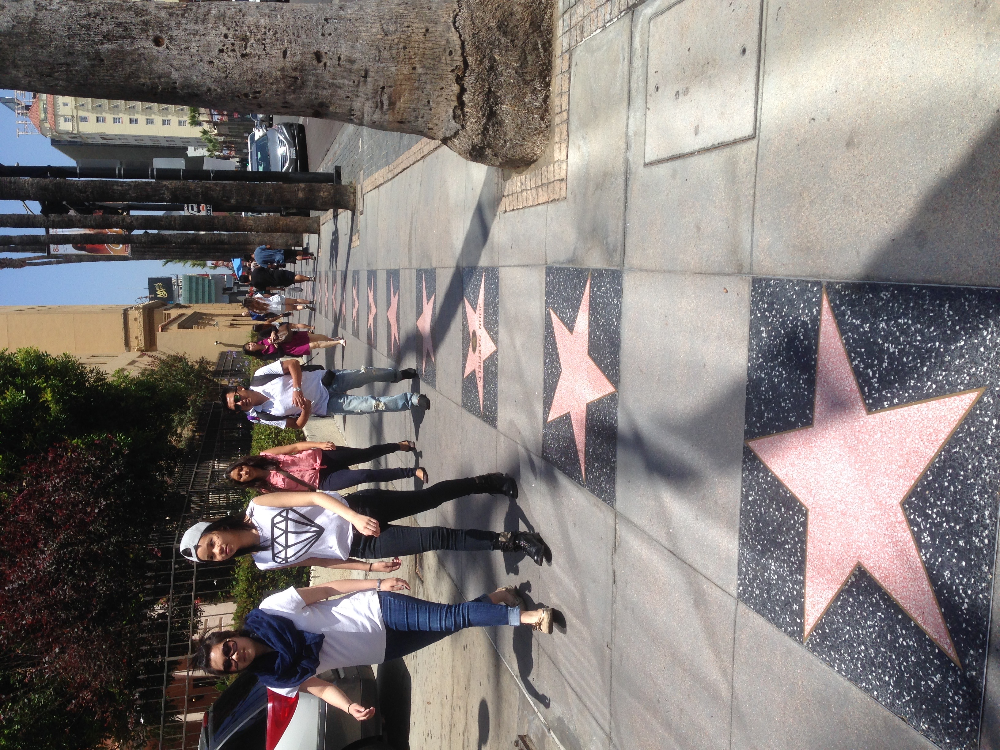

Los Angeles & Las Vegas
Teksti by Saara S., Toukokuu 19, 2025.
Matkalla
Los Angeles ja Las Vegas eivät kuuluneet suosikkokohteisiini, mutta tulipahan saatua uusia kokemuksia.
Los Angeles tuntuu jatkuvan ikuisesti lähiöstä toiseen ja kaupunki onkin valtava. Perusnähtävyyksien lisäksi kaupungissa ei tuntunut olevan hirveästi mitään tekemistä kuin autoilla ympäriinsä. Tietenkin jos olisi halunnut mennä Universal Studiosille hurvittelemaan, niin tarina olisi voinut olla aika erilainen. Mutta aikaa oli aika vähän siihen.
Santa Monicaa suosittelen kyllä vahvasti. Sympaattinen kaupunki, jonka Pier-alue on mukava pienehkö huvipuisto. Siellä pääsee myös helposti rannalle, jos se kiinnostaa.
Las Vegas oli niin muovinen ja epäaito kuin voi kuvitella. Ulkona ei pystynyt olemaan, koska aavikko. Onneksi aika kului altaalla juomia siemaillen oikein mukavasti. Hotelli tarjoaa kaiken ruokaa ja juomaa myöten, että kenellekkään ei tulisi mieleen hortoilla kasinolta ulos.
Kasinon viileä ilma ja erittäin hämyinen valo tarjoaa mielenkiintoisen kontrastin ulkomaailmaan. Kellojahan siellä ei ole näkyvillä, joten ajantaju saattaa hieman hämärtyä.
Fun fact: En pelannut yhtäkään uhkapeliä.
 



Vinkkejä
Teksti by Saara S., Toukokuu 19, 2025.
Vinkki
Vuokraa auto. Ainakin Losiin. Muuten liikkuminen on hankalaa, varsinkin jos haluaa ihastella nähtävyyksiä omin neuvoin. Julkinen liikenne tuossa kaupungissa on olematonta. Las Vegasissa kannattaa vierailla turistisesongin ulkopuolella, koska ei ole läheskään niin kuuma vaikka kuuma onkin. Toiseksi huoneen saa huomattavan halvalla. Esimerkiksi saimme tuolloin aikoinaan sviitin yöksi 70 dollarilla.